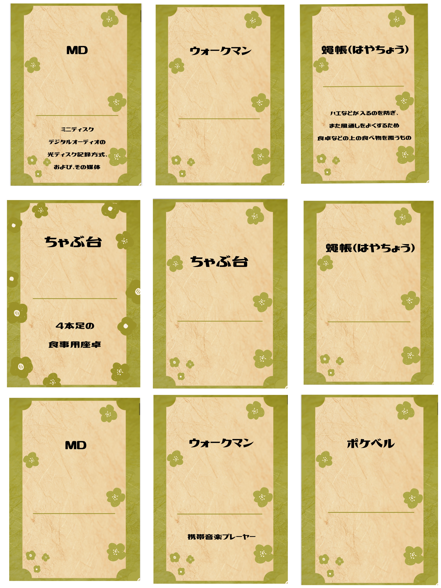
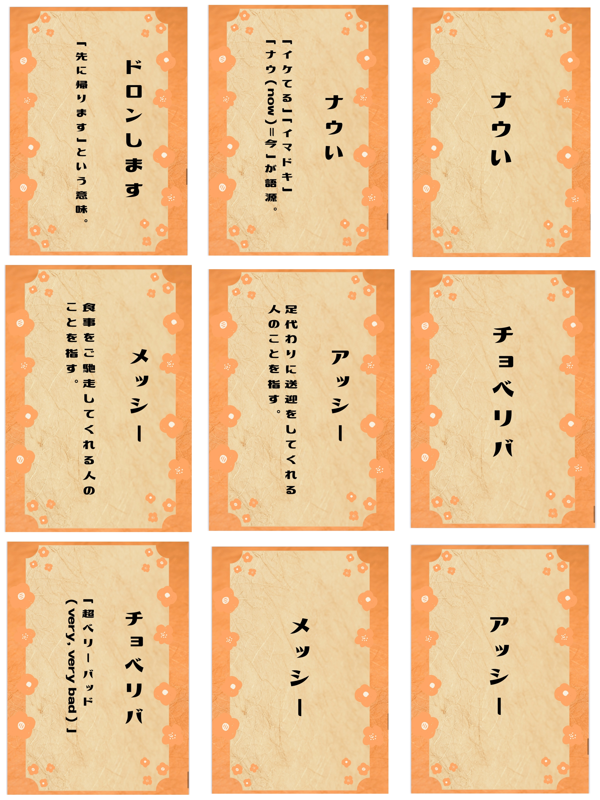

10/04
cocoru鎌倉で実際におばあちゃんやスタッフの方、中学生と最終発表会
 
おじいちゃんおばあちゃんだけでなく、スタッフさんや中学生まで世代を超えて楽しんでくれた！
＜
遊んでくれたみんなの感想
＞
・知らない単語などもあって面白かった！
・おじいちゃんおばあちゃん世代よりもお母さんお父さん世代の言葉だったかも・・・
・いろんな世代別のカードがあっても面白そう
＜
自分の感想
＞
思ったよりもみんなが盛り上がってくれたのが嬉しかった。
いろんな世代別のカードゲームを作ったらさらに楽しくなるんじゃないかなと感じた。